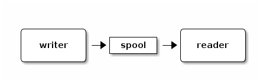
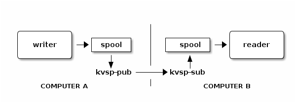

- kv-spool ("key-value" spool)
-
a Linux-based C library, with Perl, Python and Java bindings, to stream data between programs as key-value dictionaries. The data stream is backed to disk, supports rewind, snapshot, network replication, and bounded disk consumption.
kvspool’s niche
Kvspool is a tiny API to stream dictionaries between programs. The dictionaries have textual keys and values. Note that what we’re calling a dictionary- what Python calls a dictionary- is known as a hash in Perl, and is manifested in the Java API as a HashMap. It’s a set of key-value pairs.
To use kvspool, two programs open the same spool- which is just a directory. The writer puts dictionaries into the spool. The reader gets dictionaries from the spool. It blocks when it’s caught up, waiting for more data. Like this,

Here’s a sneak peak at a really simple writer and reader:
import kvspool kv = kvspool.Kvspool("spool") d = {"day": "Wed", "temp": 37} kv.write(d)
use KVSpool; my $kv = KVSpool->new("spool"); my $d = $kv->read();
Because the spooled data goes into the disk, the reader and writer are decoupled. They don’t have to run at the same time. They can come and go. Also, if the reader exits and restarts, it picks up where it left off.
Space management
In a streaming data environment, the writer and reader can run for months on end. A key requirement is that we don’t fill up the disk. So, when we make a spool directory, we tell kvspool what its maximum size should be:
% mkdir spool
% kvsp-init -s 1G spoolThis configures a maximum of 1 GB of data in the spool. After it reaches that size, it stays that size, by deleting old data as new data comes into the spool. Deletion is done in units that are about 10% of the total spool size.
A reader that’s offline long enough can eventually lose data- that is, miss the opportunity to read it before it’s deleted. Data loss is a deliberate feature - otherwise it’d be necessary to block the writer or use unbounded disk space.
Shared memory I/O
You can locate a spool on a RAM disk if you want the speed of shared memory without true
disk persistence- kvspool comes with a ramdisk utility to make one.
Rewind and replay
After data has been read from the spool, it remains in the spool directory until a future time when kvspool deletes it to make room for new data. This is the basis for a handy "rewind and replay" feature:
% kvsp-rewind spoolAfter a rewind, reading starts at the beginning of the spool. The reader should be restarted for this to take effect. Rewind and replay is a convenient way to develop a program on a consistent source of test data.
Snapshot
A snapshot is just a copy of the spool. You can bring the copy back to a development environment, rewind it, and use it as a consistent source of test data.
% cp -r spool snapshotCopying a spool of production data lets you develop programs on real data but without needing a writer present- the data has been "canned".
Local and Network Replication
You can also publish a spool over the network, like this:
% kvsp-pub -d spool tcp://192.168.1.9:1110Now, on the remote computers where you wish to subscribe to the spool, run:
% kvsp-sub -d spool tcp://192.168.1.9:1110If you give multiple addresses to kvsp-sub, it connects to all of them and concentrates
their published output into a single spool.
% kvsp-sub -d spool tcp://192.168.1.9:1110 tcp://192.168.1.10:1111Kvspool includes a few kinds of replication utilities described below.

|
Tip
|
A job manager such as the author’s pmtr process
monitor can be used to run kvsp-sub and kvsp-pub in the background, and restart
them when the system reboots. |
License
See the LICENSE.txt file. Kvspool is free and open source.
Resources
Additional software by the author is cataloged at http://troydhanson.github.io/.
Getting kvspool
You can clone kvspool from github:
% git clone git://github.com/troydhanson/kvspool.gitTo build kvspool:
% cd kvspoolIf the configure script does not yet exist, run ./bootstrap. If you want to build the
network replication utilities, make sure you have Jansson and ZeroMQ (2.x or 3.x).
% ./configure
% make
% sudo make installThis builds and installs the C library and utilities, and if the prerequisite packages are installed, it builds the Perl, Python and Java bindings, and ZeroMQ-based utilities.
Utilities
Basic
| command | example |
|---|---|
|
|
|
|
|
|
|
|
|
|
The kvsp-init command is used when a spool directory is first created, to set
the maximum capacity of the spool. It accepts k/m/g/t suffixes. If kvsp-init is
run later, after the spool already exists and has data, it is resized.
Run kvsp-status to see what percentage of the spool has been consumed by a reader. It
can take multiple spools as arguments. For each spool it prints a line like:
/tmp/spool 99% 877kb 28secsThe fields show what percentage of the spool has been read, how much data is currently in the spool, and how recently data was written into the spool.
The kvsp-rewind command resets the reader position to the beginning (oldest frame) in the
spool. Use this command in order to "replay" the spooled data. Disconnect (terminate) any
readers before running this command.
Use kvsp-tee to support multiple readers from one input spool. First make a separate
spool directory for each reader (and use kvsp-init to set the capacity of each one);
then use kvsp-tee as the reader on the source spool. It maintains a continuous copy of
the spool to the multiple destination spools. This command needs to be left running to
maintain the tee.
The kvsp-concen utility is the opposite of kvsp-tee. It takes multiple source
spools and makes a single output spool from them. It is a spool concentrator. The
source spools are flagged with -d spool and the final argument is the output spool.
Network utilities
| command | example |
|---|---|
|
|
|
|
|
|
|
|
|
|
The network utilities keep a local spool continuously replicated to a remote spool.
kvsp-pub/kvsp-sub
The utilities kvsp-pub and kvsp-sub exist to publish a source spool to a remote spool.
This pair of utilities communicates in JSON over ZeroMQ. The publisher listens on the
specified TCP port. The subscriber connects to it. If more than one subscriber connects,
each receives a copy of the data. When no subscribers are connected, the publisher drops
data. However, when the -s flag is given to both kvsp-pub and kvsp-sub, two things
change: the publisher queues data when waiting for a subscriber instead of dropping it;
and secondly, if more than one subscriber connects, the data gets divided among them
rather than duplicated to all of them.
A subscriber can concentrate data (that is, "fan-in" the data) from many publishers, simply by listing multiple ZeroMQ endpoints on the command line.
kvsp-bpub/kvsp-bsub
The kvsp-bpub and kvsp-bsub utilities implement binary-over-ZeroMQ replication. Their
usage is the same as kvsp-pub and kvsp-sub except the required -b cast.cfg argument.
This file lists the binary data type for each required key. Here’s an example cast.cfg:
i32 timestamp
str sensor_name
i8 tempIn this example, every dictionary in the source spool is expected to have three keys
(timestamp, sensor_name and temp); any other keys get ignored. Their values are parsed
to the binary types listed (i32, str and i8). The binary buffer is transmitted
without any keys. On the receiving subscriber, the binary is unpacked using the same file.
The reason for using binary publishing is speed- it’s often an order of magnitude faster.
These data types may appear in cast.cfg
i8 // byte (8-bit int)
i16 // short (16-bit int)
i32 // integer (32-bit int)
ipv4 // dotted quad IP address
str // string
d64 // double (64-bit float)kvsp-tpub
Finally there is a "plain TCP" binary publisher. It has no subscriber counterpart yet, so you have to code your own subscriber to use it. It takes a cast.cfg of the same form as above. It listens on the specified port, and when a subscriber connects to it, the dictionaries in the spool are transmitted as length-prefixed binary messages. The length prefix is a 32-bit integer (host-endianness) specifying the message length that follows. The remaining binary data is transmitted in host-endianness, except IP addresses in network order.
Other utilities
| command | example |
|---|---|
|
|
|
|
|
|
|
|
|
|
The kvsp-spr utility is used to manually read a spool and print its frames to the
screen. Normally it will block waiting for data once it reaches the end of the spool but
the -B 0 (no-block) option tells it to stop reading if the end of the spool is reached.
The kvsp-spw utility is used only for testing; it writes a frame of data to the spool
(or several frames if the -i option is used with a count); in the latter mode there is a
sleep (delay) between each frame, which can be adjusted using the -d <seconds> option.
The kvsp-mod command "obfuscates" selected values from a source spool to hash values
in the output spool (named with the -o option). For each key named with the -k flag,
its value in the output spool is replaced with a mathematical hash. The hash numbers
preserve consistency (so the same input value produces the same output value) but the
value itself is a meaningless number.
A simple benchmark is performed by the kvsp-speed utility to measure read and write
performance.
The ramdisk utility creates, queries or unmounts a ramdisk- a Linux tmpfs filesystem.
In the form shown in the table above it creates a 1G ramdisk on the /mnt/ramdisk mount
point (this directory must already exist). A ramdisk created this way will appear in the
/proc/mounts listing. If a ramdisk already exists on that mount point, the command does
nothing. In create (-c) mode, the -d <dir> option may be used one or more times to
specify (as absolute paths) directories to create within the ramdisk. Using ramdisk -u
/mnt/ramdisk unmounts it. The -q option queries a directory to see if its a ramdisk
and show its size. The ramdisk utility is included with kvspool because it is often
convenient to locate a spool on a ramdisk for performance.
Examples & API
Perl
use KVSpool; my $v = KVSpool->new("spool"); my $h = {'day' => 'Wednesday', 'user' => 'Troy'}; $v->write($h);
In Perl the KVSpool object is instantiated with one directory argument. Then every time
the write method is called with a hash reference as argument, it’s written to the spool.
To read a spool, use the read method which returns a hash reference each times it’s
called:
my $h = $v->read();The reader is normally blocking (it waits for data if none is immediately available).
To enact non-blocking mode, use $v->{blocking}=0;, then test the reference returned from
read() using defined(). If it’s not, no data is currently available in the spool.
Python
import kvspool kv = kvspool.Kvspool("spool") d = {"day":"Wednesday","user":"Troy"} kv.write(d)
The write method takes a dictionary, while the read method returns a dictionary:
d = kv.read()To enact non-blocking mode on the reader, use kv.blocking = 0 then test whether the
object returned from read() is None. If so, no data is currently available in the spool.
Java
public class TestKVJava { public static void main(String args[]) { KVJava kv = new KVJava("spool"); HashMap<String,String> h = new HashMap<String,String>(); h.put("day", "Wednesday"); h.put("user", "Troy"); kv.write(h); } }
The example first instantiates a KVJava object. (You can copy KVJava.java from the
kvjava directory into your own source tree; this class loads the underlying JNI-based
library, which must be built and installed as described below).
To write to the spool, pass a HashMap<String,String> to the write method. The read
method is similar:
HashMap<String,String> m;
m = kv.read();You can put the reader in non-blocking mode by setting kv.blocking = false;
and then test whether the object returned from read() is equal to null. If so,
no data is currently available in the spool.
The Java binding is not yet integrated into the main build, so it requires extra steps to
build. After building kvspool, cd kvjava and run make. Most likely you will need to
edit the kvjava/Makefile lines where JNIINC and JNILIB are defined to make it work.
The result of compilation is libKVJava.so which must be manually copied to your choice
of library directory such as /usr/local/lib (You may also need to set LD_LIBRARY_PATH
so that the dynamic linker can find this shared library it at runtime).
C/C++
C programs must be linked with -lkvspool.
#include "kvspool.h" ... void *sp = kv_spoolwriter_new("spool"); void *set = kv_set_new(); kv_adds(set, "day", "Wednesday"); kv_adds(set, "user", "Troy"); kv_spool_write(sp,set); ... kv_set_free(set); kv_spoolwriter_free(sp);
In C, a spool is opened for writing by calling kv_spoolwriter_new which takes the spool
directory as argument. It returns an opaque handle (which you should eventually free with
kv_spoolwriter_free).
Kvspool provides a data structure that implements a dictionary in C. It is created using
kv_set_new which returns an opaque handle (which should eventually be freed using
kv_set_free). In the meantime, it can be used for the whole lifetime of the program, by
adding key-value pairs to it, writing them out, clearing it, and reusing it over and over.
To add a key-value pair, use kv_adds which takes the set handle, the key and the value.
The key and value get copied into the set (the set does not keep a pointer to them).
To write the set into the spool, call kv_spool_write with the spool and set handle.
To re-use the set, call kv_set_clear with the set handle. For debugging you can dump a
set to stderr using kv_set_dump(set,stderr).
To open a spool for reading, call kv_spoolreader_new which takes the spool directory and
returns an opaque handle to the spool. Then call kv_spool_read to read the spool.
void *sp = kv_spoolreader_new("spool"); void *set = kv_set_new(); kv_spool_read(sp,set,1);
The final argument to kv_spool_read specifies whether it should block if there is no
data ready in the spool. A positive return value means success (data was read from the
spool and it’s been populated into the set). A zero value means that non-blocking mode
was used, but no data is currently available in the spool.
A C program can iterate through all the key-value pairs in the result set like this:
kv_t *kv = NULL; while ( (kv = kv_next(set, kv))) { printf("key is %s\n", kv->key); printf("value is %s\n", kv->val); }
You can also fetch a particular key-value pair from the set using kv_get, providing
the key as the final argument:
kv_t *kv = kv_get(set, "user");The number of key-value pairs in the set can be obtained using kv_len:
int count = kv_len(set);The C API also has a function to rewind the spool, which works if there is no reader that has the spool open at the time. It takes the spool directory as its only argument.
sp_reset(dir);Acknowledgments
Thanks to Trevor Adams for writing the original Perl and Java bindings and to JHU/APL OTT for their support.